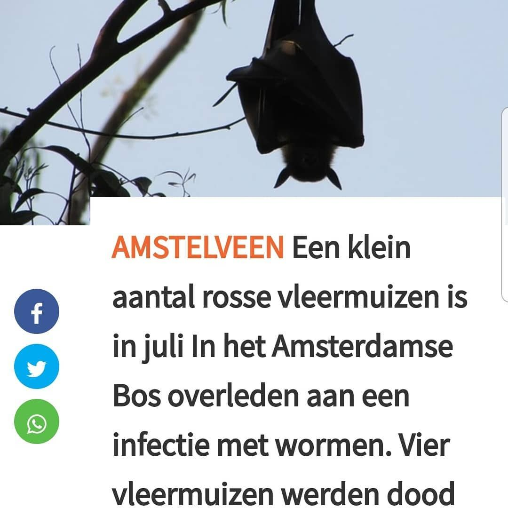
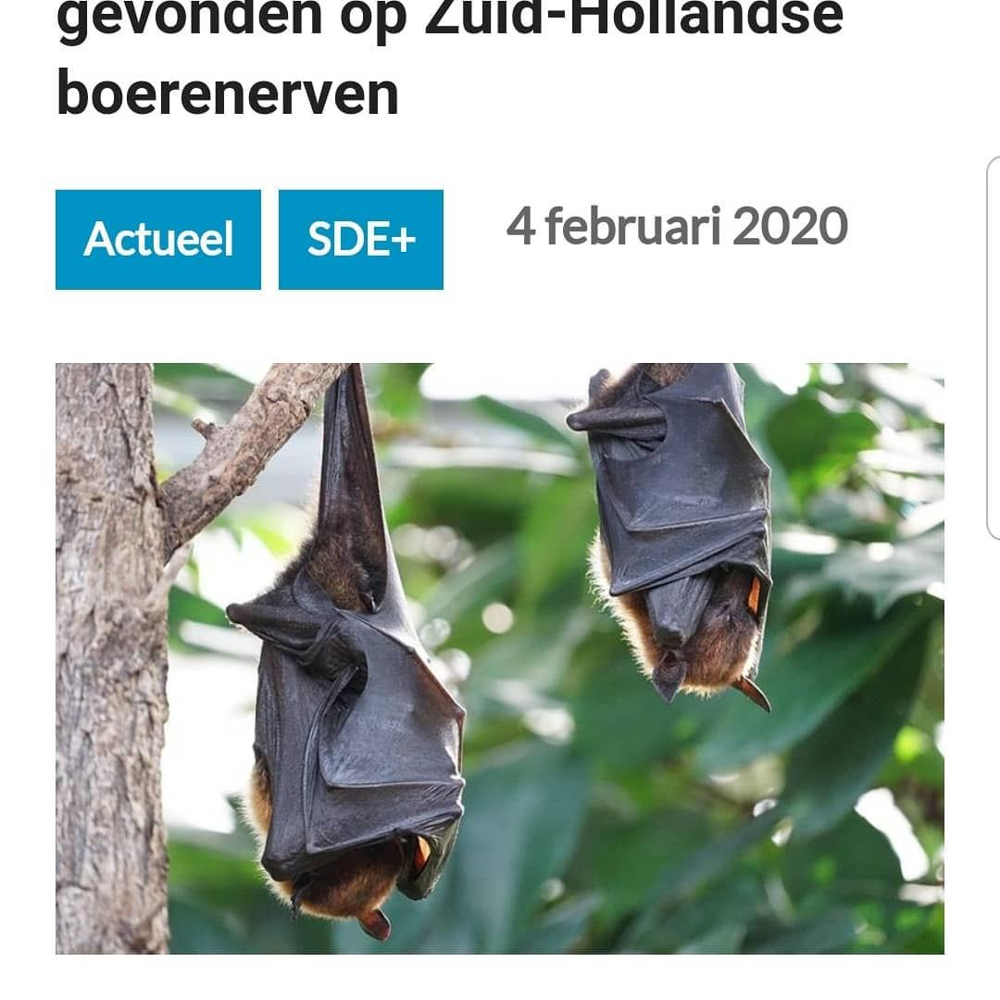
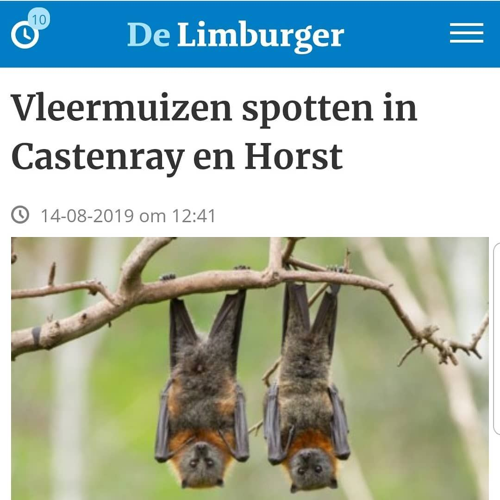

Drie keer een vleerhond, geen vleermuis
- Op de foto
- Vleerhond
- Het ging over
- Vleermuis



Een driedubbele deze keer. Het gaat nogal eens over vleermuizen in Nederland, daar deze beschermd zijn.
Wat bewustwording is dan super, maar met deze foto's gaat niemand in Nederland ze herkennen. @amstelveens.nieuwsblad , @melkveebedrijf_nl en @delimburger hebben alle drie vleerhonden afgebeeld, in plaats van vleermuizen. Vleerhonden komen verre van in Nederland voor, dus de volgende keer een inheemse soort pakken!
https://www.amstelveensnieuwsblad.nl/premium/natuur-en-milieu/357405/negen-rosse-vleermuizen-in-amsterdamse-bos-slachtoffer-van-wormeninfectie
https://www.melkveebedrijf.nl/wet-en-regelgeving/subsidies-melkveehouderij/sde-subsidie/acht-soorten-vleermuizen-gevonden-op-zuid-hollandse-boerenerven/
https://m.limburger.nl/cnt/dmf20190814_00118406